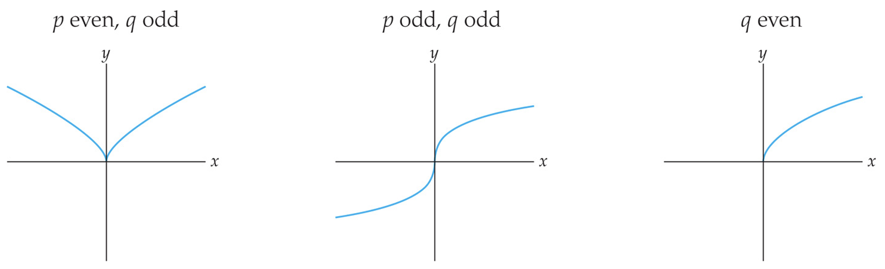

For example, \(f(x)=8x^3\text{,}\)\(g(x) = 8x^{17/5}\text{,}\) and \(h(x) = 1\) are all power functions. Note that \(h(x)\) can be rewritten in the form
In this definition, the constant \(k\) is called the power or exponent, and the constant \(A\) is called the coefficient. Note that the exponent \(k\) must be a rational number. A rational number is a real number that can be written as a quotient of the form \(\frac{p}{q}\) for some integers \(p\) and \(q\) with \(q\neq 0\text{.}\) The variable must be in the base; this means that, for example, \(f(x) = x^{\pi}\) and \(f(x) = 10^x\) are not considered power functions.
Recall that power functions can be written in the form \(f(x) = Ax^k\text{.}\)\(A\) can be any nonzero real number, while \(k\) must be a rational number, meaning a fraction or finite/repeating decimal.
\(3x^2\) is a power function with \(A=3\) and \(k=2\text{.}\)
\(4x^{\sqrt{2}}\) is not a power function since the power \(k = \sqrt{2}\) is not rational. As a decimal, \(\sqrt{2}\) never repeats or ends, and we cannot write \(\sqrt{2}\) as a fraction.
\(\pi x^8\) is a power function with \(A=\pi\) and \(k=8\text{.}\) Remember that \(A\) is allowed to be any real number, not just integers or rational numbers.
\(3(5^x)\) is not a power function because the variable \(x\) is in the exponent, instead of the base. This is an example of a transcendental function, and we will learn about those next semester.
Notice that we say a function \(f\) is a power function if it can be written in the form \(f(x) = Ax^k\) for some constants \(A\) and \(k\text{;}\) it may not start out written that way. Sometimes it can take a great deal of algebra to determine whether or not a function is a power function "in disguise."
Four Shapes of Integer Power Functions: The simplest power functions are those whose exponents are integers. It turns out that we can classify power functions with integer exponents into four types, depending on whether \(k\) is even or odd, and also positive or negative. The next theorem illustrates these types for \(f(x) = Ax^k\) when \(A=1\text{.}\) The graphs for \(A\lt 0\) are reflected over the \(x\)-axis.
If \(k\) is an integer with \(k\neq 1\) and \(k\neq 0\text{,}\) then the graph of \(f(x) = x^k\) has the following shape, domain, range, and zeros, depending on whether \(k\) is even or odd, and positive or negative:
For example, the first graph could be the graph of \(f(x) = x^2\) or \(f(x) =x^6\text{.}\) The second graph could be the graph of \(f(x) = x^5\) or \(f(x) = x^{13}\text{.}\) The third and fourth graphs could be the graphs of \(f(x) = x^{-4}=\dfrac{1}{x^4}\) and \(f(x) = x^{-7} = \dfrac{1}{x^7}\text{,}\) respectively.
Recalling Definition Definition 1.5.2 from the previous section, polynomial functions are sums of power functions with positive integer exponents \(k>0\text{,}\) along with an additional constant term. Power functions with negative integer exponents \(k\lt 0\) are examples of rational functions.
The Size of \(k\) Affects the Steepness: While the sign and parity (whether it’s even or odd) of the integer power \(k\) together determine the general shape of a power function \(f(x) = x^k\text{,}\) the size of \(k\) determines the steepness of the curve.
For example, in Figure 1.6.11 below, \(f(x) = x^2, f(x) = x^4\text{,}\) and \(f(x) = x^6\) all have the same basic "U" shape, but the red graph of \(f(x) = x^4\) is steeper on the ends and flatter in the middle than the blue graph of \(f(x) = x^2\text{,}\) and the green graph of \(f(x) = x^6\) is steeper and flatter still. In each of the following figures, the largest value of \(|k|\) has the steepest and flattest curve.
Note that each of the four graphs shown in [cross-reference to target(s) "fig_TaalmanPage303a1-2" missing or not unique] and [cross-reference to target(s) "fig_TaalmanPage303a3-4" missing or not unique] goes through the point \((1,1)\text{,}\) because if \(f(x) = x^k\text{,}\) then \(f(1)=1^k=1\) regardless of the sign or the parity of the power \(k\text{.}\) This means that none of the graphs are a vertical or horizontal stretch of one another. For example, the graph of \(y=x^4\) is not a vertical or horizontal stretch of the graph of \(y=x^2\text{.}\)
The Coefficient \(A\) Stretches and Compresses: Multiplying \(f(x) = x^k\) by a positive constant \(A>1\) produces a vertical stretch, multiplying by \(0\lt A\lt 1\) causes a vertical compression of \(x^k\text{,}\) and multiplying by a negative number \(A\) will in addition reflect the graph over the \(x\)-axis. In each figure that follows we see the graphs of \(f(x) = x^k, f(x) = 0.5x^k\text{,}\) and \(f(x) = 2x^k\) for some value of \(k\text{.}\) In each case the graph of \(f(x) = x^k\) is the blue middle graph, the graph of \(f(x) = 2x^k\) is the green graph with heights doubled, and the graph of \(f(x) = 0.5x^k\) is the red graph whose heights are halved.
Things get a little more complicated when we consider graphs of power functions \(f(x) = x^k\) where \(k\) is a reduced rational number \(\frac{p}{q}\text{,}\) meaning that \(k\) is a fraction that cannot be simplified. For example, when \(q\) is even, \(x^{p/q}=(\sqrt[q]{x})^p\) will be undefined for negative values of \(x\text{,}\) since we cannot take an even root of a negative number. A concrete example of this is when \(q=1\) and \(p=2\text{,}\) so that
Theorem1.6.15.Power Functions with Positive Rational Powers.
If \(\frac{p}{q}\) is a positive reduced rational number, then the graph of \(f(x) = x^{p/q} = (\sqrt[q]{x})^p\) has the following shape, domain, range, and roots, depending on the parity of \(p\) and \(q\) and whether \(\frac{p}{q}\) is greater than or less than 1:
If \(0\lt \frac{p}{q}\lt 1\text{,}\) then \(f(x) = x^{p/q} = (\sqrt[q]{x})^p\) has one of the following three types of graphs:

Figure1.6.16.\(f(x) = (\sqrt[q]{x})^p\) with \(\frac{p}{q}\) between 0 and 1.
Note that since \(\frac{p}{q}\) is assumed to be reduced, we cannot have both \(p\) even and \(q\) even. Thus in the cases when \(q\) is even, we must have that \(p\) is odd.
For example, the graphs in Figure 1.6.16 could be the graphs of \(y=x^{2/3}, y = x^{1/3}\text{,}\) and \(y=x^{1/2}\text{,}\) from left to right, since \(2/3, 1/3\text{,}\) and \(1/2\) are all between 0 and 1. Additionally, \(y=x^{2/3}\) has \(p=2\) even and \(q=3\) odd. \(y = x^{1/3}\) has \(p=1\) odd and \(q=3\) odd. \(y=x^{1/2}\) has \(p=1\) odd and \(q=2\) even.
The graphs in Figure 1.6.17 could be \(y=x^{4/3}, y=x^{5/3}\text{,}\) and \(y=x^{3/2}\text{,}\) from left to right, since \(4/3, 5/3\text{,}\) and \(3/2\) are all greater than 1. \(y=x^{4/3}\) has \(p=4\) even and \(q=3\) odd. \(y=x^{5/3}\) has \(p=5\) odd and \(q=3\) odd. \(y=x^{3/2}\) has \(p=3\) odd and \(q=2\) even.
For example, when \(p\) is even and \(q\) is odd, the graph must be above the \(x\)-axis because for \(x^{p/q} = (\sqrt[q]{x})^p\text{,}\) after taking the \(q\)th root, we are raising to an even power of \(p\text{,}\) which will make the function greater than or equal to zero.
On the other hand, when \(p\) and \(q\) are both odd, \(x^{p/q} = (\sqrt[q]{x})^p\) will be negative when \(x\) is negative, and positive when \(x\) is positive, since raising to an odd power \(p\) will preserve whether the expression is positive or negative.
In the cases where the denominator of the power \(q\) is even, \(x^{p/q} = (\sqrt[q]{x})^p\) requires us to take the \(q^{th}\) root first. Always remember that we cannot take even roots of negative numbers, hence the domain is restricted to \(x\geq 0\text{.}\) }}
So far, we have examined power functions \(f(x) = x^{p/q}\) where \(\frac{p}{q}\) is positive. What happens when the power is negative? By properties of exponents, we have
and thus the function \(f(x) = x^{-p/q}\) is the reciprocal of the function \(g(x) = x^{p/q}\text{.}\) This means that the height of \(f(x)\) at any point \(x\) is simply the reciprocal of the height of \(g(x)\) at that point \(x\text{.}\) For example, whenever \(g(x)\) is equal to 1, \(f(x)\) will also equal \(\frac{1}{1} = 1\text{.}\) Whenever \(g(x)\) is large, \(f(x)\) will be small; and whenever \(g(x)\) is small, \(f(x)\) will be large. Finally, if \(g(x)\) is zero, then \(f(x)\) will have a vertical asymptote, and vice versa, as illustrated in the following three figures.
In the graphs in Figure 1.6.19, do the blue graphs or the red graphs correspond to the functions with the negative exponents? Feel free to use a graphing calculator or Desmos. Then think about how you can tell from the formula. As a hint: what happens when \(x=0\text{?}\) What does the negative exponent mean?
is defined everywhere but at \(x=0\text{,}\) so its domain is \((-\infty,0)\cup(0,\infty)\text{.}\) Note that the power of \(-2\) is not being applied to the coefficient \(3\text{,}\) only to the \(x\text{.}\)
The function is defined everywhere except \(x\lt 0\text{,}\) because of the even root, so its domain is \([0,\infty)\text{.}\) Again, note that the coefficient 2 is not affected by the exponent.
is defined for all \(x\neq 0\text{,}\) because we can take odd roots of negative numbers but we cannot divide by 0, so its domain is \((-\infty,0)\cup(0,\infty)\text{.}\)
From the shape of the first graph \(y=f(x)\text{,}\) we know that if \(f(x) = Ax^k\) is a power function, then \(k\) must be an even negative integer by Figure 1.6.9 in Theorem 1.6.7. Let’s try the simplest possible case: \(k=-2\text{.}\) Then \(f(x) = Ax^{-2}\) and \(f(-2) = 1\) imply that
For the middle graph \(y=g(x)\text{,}\) we need a power function of the form \(g(x) = Ax^{p/q}\) where \(q\) is odd, \(p\) is odd, and \(\frac{p}{q}\lt 1\) by looking at the middle picture of Figure 1.6.16 of Theorem 1.6.15. Since the graph here is reflected over the \(x\)-axis, we need \(A\) to be negative. The simplest power \(k=\frac{p}{q}\) that satisfies these conditions is \(\frac{p}{q} = \frac{1}{3}\text{.}\) Since \(g(1) = -3\text{,}\) we have
\begin{equation*}
-3 = A(1)^{1/3} = A \Longrightarrow A=-3
\end{equation*}
By Theorem Theorem 1.6.15 , the graph below belongs to a power function \(h(x) = Ax^k\) where \(k=\frac{p}{q}\) is rational with \(q\) even, \(p\) odd, and \(0\lt \frac{p}{q}\lt 1\text{.}\)
Assuming that \(\frac{p}{q} = \frac{1}{2}\) (since this is the simplest possibility) so that \(h(x) = Ax^{1/2}\text{,}\) determine the value of \(A\) by using the labeled point \((4,1)\text{.}\)
Power functions are extremely useful because square roots are used in many practical calculations. We have already seen the square root used when applying the quadratic formula to find the \(x\)-intercepts of quadratic functions. Another use of square roots is in calculating distance.
The above formula is a one-dimensional version of the more familiar formula for the distance between two points in the Cartesian plane: 28
The Cartesian plane was named after the philosopher-mathematician René Descartes, who is credited as the father of analytic geometry and whose work formed the basis for the development of calculus. https://en.wikipedia.org/wiki/René_Descartes#Mathematical_legacy
Plot the points \(P=(-1,3)\) and \(Q=(4,-2)\) on a set of axes, and sketch the line segment connecting these two points. Use the distance formula to find the length of this line segment.
Suppose a straight road runs past a monument. If we create a set of axes that puts the monument at the origin (the point \((0,0)\)), the road is described by the function \(f(x) = 2-x\text{,}\) where \(x\) is measured in hundreds of feet. Find a function \(d(x)\) that gives the distance from a point \((x,f(x))\) on the road to the monument.
If we call the monument \(P=(x_1,y_1)\text{,}\) we have \(x_1=0\) and \(y_1=0\text{.}\) If we call a point on the road \(Q=(x_2,y_2)\text{,}\) then we have \(x_2=x\) and \(y_2=f(x)\text{,}\) since any point on the road has coordinates \((x,f(x))\text{.}\) Since \(f(x) = 2-x\text{,}\) we have that \(y_2 = f(x) = 2-x\text{.}\)
Let’s take a moment to think about the function we created in the previous example and the properties it should have based on the context from which it was developed.
Let’s consider the domain of the function \(d(x) = \sqrt{2x^2-4x+4}\text{,}\) the distance (in hundreds of feet) between the monument and a point on the road with location \((x,f(x))\text{.}\)
Intuitively, if we consider the problem of finding the distance between a road and a monument, we should be able to find a distance for any point on the road. So in our model \(d(x)\text{,}\) the domain should be all real numbers.
Algebraically, note that since there is a square root involved, we need the quantity within the square root to be non-negative. The quantity in the square root is \(2x^2-4x+4\text{.}\) This is a quadratic expression with discriminant \(b^2-4ac = (-4)^2-4(2)(4) = 16-32=-16\text{,}\) and so the expression is never zero. Plugging in, for example \(x=0\text{,}\) we see that \(2x^2-4x+4 = 2(0)^2-4(0)+4=4\text{,}\) and so the quadratic expression is always positive. In other words, the quadratic has no zeros and there is a point above the \(x\)-axis, so we know it is always above the \(x\)-axis. In other-other words, the expression \(2x^2-4x+4\) is always positive! So the quantity under the square root is never negative, meaning that the function is defined for all \(x\text{.}\)
We could also ask whether \(d(x) = \sqrt{2x^2-4x+4}\) has any zeros and whether it is increasing and/or decreasing. This would correspond to whether the road passes through the monument (it doesn’t) and whether we get closer or farther away from the monument as we travel along the road (intuitively, we should first get closer and then as we pass the monument, we get farther). A graph of \(d(x)\) confirms both of these facts:
Here is another thing we can see from the graph: the closest point on the road to the monument is at the location with \(x=1\text{.}\) We will learn to determine all of these properties algebraically using calculus later in the course.
Another application of calculating the distance between points is the method of Least Squares Regression, which finds the line of best fit given a collection of data points:
This method works by making the square of the errors between the points and the line as small as possible. These "errors" are precisely distances between points and the line that is being found. Least Squares Regression is a common method used for Statistical analysis in many different fields, from finance and economics to politics and sociology.
A function is algebraic if it can be expressed in terms of constants and a variable \(x\) by using only arithmetic operations \((+, -, \times\text{,}\) and \(\div)\) and rational constant powers of the variables. For example
There are four basic types of algebraic functions, which we have already investigated: linear functions, polynomial functions, rational functions, and power functions. More complicated algebraic functions can be constructed by using sums (\(+\)), differences (\(-\)), products (×), and quotients (\(\div\)) of these four basic types. Table 1.6.35 gives a general form and examples for each type:
There is a certain amount of overlap among the types listed in the table; for example, \(f(x) = x^2\) is both a power function and a polynomial function, and \(f(x) = \frac{1}{x} = x^{-1}\) is both a power function and a rational function.
Functions that are not algebraic are called transcendental functions. In later chapters of this book, we will investigate four basic types of transcendental functions: exponential, logarithmic, trigonometric, and inverse trigonometric functions. We will not go into their definitions or general forms right now; however, Table 1.6.36 provides some examples:
Example1.6.37.Identifying algebraic function types.
For each function listed, determine whether it is a linear, power, polynomial, rational, algebraic or transcendental function. Some functions may satisfy more than one classification.
\(f(x) = x^{-2}\) is a power function of the form \(Ax^k\) with real-number coefficient \(A=1\) and rational-number exponent \(k=-2\text{.}\) Since \(x^{-2}=\frac{1}{x^2}\text{,}\)\(f\) is also a rational function of the form \(\frac{p(x)}{q(x)}\) with the polynomials \(p(x) = 1\) and \(q(x) = x^2\text{.}\) Thus \(f\) is an algebraic function that is both a power function and a rational function.
The function \(2^x\) is not algebraic, because it involves a nonconstant exponent. Therefore the function \(g(x) = 3x^2+2^x+1\) also fails to be algebraic and thus is transcendental.
\(h(x) = \frac{\sqrt{x}}{1+x}\) is a quotient of algebraic functions, but not a quotient of polynomials, since \(\sqrt{x}\) is not a polynomial. Therefore \(h(x)\) is an algebraic function, but not a rational function.
This function can be simplified: \(k(x) = (x-1)^2-x^2 = x^2-2x+1-x^2 = -2x+1\text{.}\) After the last simplification it is easy to see that \(k(x)\) is also a polynomial function, with degree \(n=1\text{,}\) and coefficients \(a_1 = -2\) and \(a_0 = 1\text{.}\) Furthermore, since we can write \(-2x+1 = \frac{-2x+1}{1}\text{,}\)\(k(x)\) is a rational function as well, with \(p(x) = -2x+1\) and \(q(x) = 1\text{.}\) Therefore \(k(x)\) is an algebraic function that is linear, polynomial, and rational.
What is an example of a single algebraic function that is linear, polynomial, rational, and a power function (all of these at once). You have seen several…
Key ideas: Just like linear and quadratic functions, power functions have predictable shapes. There are too many of them to memorize, but we can remember some of them based on the size and parity of the exponent, the domain, and whether the function is always positive or not. Power functions are used to find the distance between points. We have now learned about all of the different types of algebraic functions and will learn about transcendental functions later.
Other ideas introduced: The coefficient \(A\) of a power function \(f(x) = Ax^k\) affects the shape of the graph by vertical stretching or compression, and reflects it over the \(x\)-axis if \(A\lt 0\text{.}\) An expression under an even root must be non-negative in order for the root to be defined.